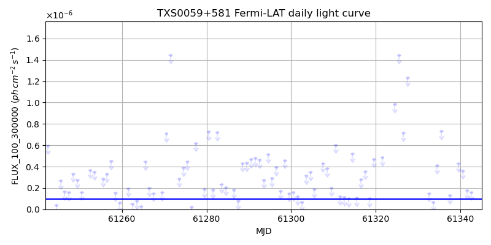
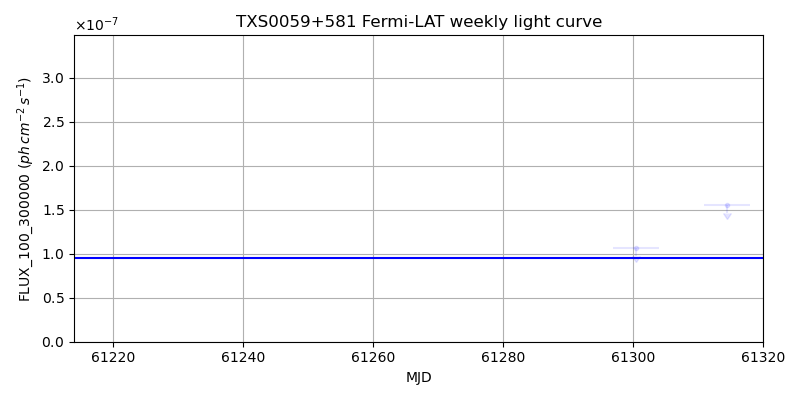
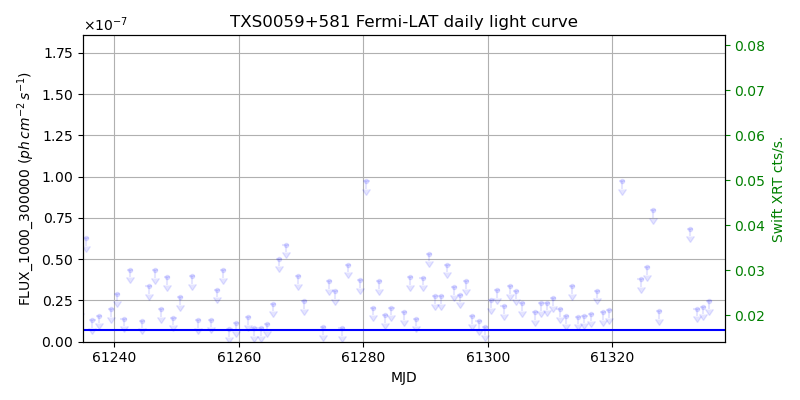
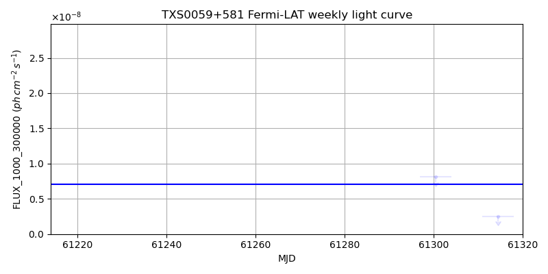

LAT Lightcurve site: https://fermi.gsfc.nasa.gov/ssc/data/access/lat/msl_lc/source/TXS_0059p581
Swift site: https://www.swift.psu.edu/monitoring/source.php?source=TXS0059+581
NED: Query
Time of last update of this page: UT: 2026-10-24 15:11 (MJD: 61337.633)
| Property | Value |
|---|---|
| R.A. | 1:02:45.84 |
| Dec. | 58:24:10.8 |
| z | 0.644 |
| 3FGL SpectrumType | LogParabola |
| 3FGL PL Index | |
| 3FGL Flux_100_300000 | 9.47e-08 1 / (s cm2) |
| 3FGL Flux_1000_300000 | 7.08e-09 1 / (s cm2) |
| 3FGL Flux >200 GeV | 3.25e-12 1 / (s cm2) |
| 3FGL Extrap. Crab >200 GeV | 0.01 |
| 3FGL Flux After EBL Absorption >200GeV | 2.99e-13 1 / (s cm2) |
| 3FGL EBL Crab Fraction >200GeV | 0.00 |

| MJD | dMJD | Flux | dFlux | Frac3FGL | FracCrab>200GeV | EBLFracCrab>200GeV |
|---|---|---|---|---|---|---|
| 61331.50 | 0.50 | 1.10e-05 | 0.00e+00 | 0.00 | 0.00 | 0.00 |
| 61332.50 | 0.50 | 1.49e-07 | 0.00e+00 | 0.00 | 0.00 | 0.00 |
| 61333.50 | 0.50 | 6.66e-08 | 0.00e+00 | 0.00 | 0.00 | 0.00 |
| 61334.50 | 0.50 | 4.10e-07 | 0.00e+00 | 0.00 | 0.00 | 0.00 |
| 61335.50 | 0.50 | 7.32e-07 | 0.00e+00 | 0.00 | 0.00 | 0.00 |

| MJD | dMJD | Flux | dFlux | Frac3FGL | FracCrab>200GeV | EBLFracCrab>200GeV |
|---|---|---|---|---|---|---|
| 61027.50 | 3.50 | 1.83e-07 | 0.00e+00 | 0.00 | 0.00 | 0.00 |
| 61041.50 | 3.50 | 2.42e-07 | 0.00e+00 | 0.00 | 0.00 | 0.00 |
| 61223.50 | 3.50 | 1.86e-06 | 0.00e+00 | 0.00 | 0.00 | 0.00 |
| 61300.50 | 3.50 | 1.06e-07 | 0.00e+00 | 0.00 | 0.00 | 0.00 |
| 61314.50 | 3.50 | 1.55e-07 | 0.00e+00 | 0.00 | 0.00 | 0.00 |

| MJD | dMJD | Flux | dFlux | Frac3FGL | FracCrab>200GeV | EBLFracCrab>200GeV |
|---|---|---|---|---|---|---|
| 61331.50 | 0.50 | 1.87e-06 | 0.00e+00 | 0.00 | 0.00 | 0.00 |
| 61332.50 | 0.50 | 6.86e-08 | 0.00e+00 | 0.00 | 0.00 | 0.00 |
| 61333.50 | 0.50 | 2.00e-08 | 0.00e+00 | 0.00 | 0.00 | 0.00 |
| 61334.50 | 0.50 | 2.13e-08 | 0.00e+00 | 0.00 | 0.00 | 0.00 |
| 61335.50 | 0.50 | 2.47e-08 | 0.00e+00 | 0.00 | 0.00 | 0.00 |

| MJD | dMJD | Flux | dFlux | Frac3FGL | FracCrab>200GeV | EBLFracCrab>200GeV |
|---|---|---|---|---|---|---|
| 61027.50 | 3.50 | 1.20e-08 | 0.00e+00 | 0.00 | 0.00 | 0.00 |
| 61041.50 | 3.50 | 2.67e-09 | 0.00e+00 | 0.00 | 0.00 | 0.00 |
| 61223.50 | 3.50 | 7.33e-07 | 0.00e+00 | 0.00 | 0.00 | 0.00 |
| 61300.50 | 3.50 | 8.11e-09 | 0.00e+00 | 0.00 | 0.00 | 0.00 |
| 61314.50 | 3.50 | 2.52e-09 | 0.00e+00 | 0.00 | 0.00 | 0.00 |
--------------------------------------------------------- Using user-supplied coords: 1:02:45.84 58:24:10.8 2000 --------------------------------------------------------- FLWO UT night of: 2026-10-25 Local Sid. @ Midnight: 01:50 Sunset (-15.0) (local, UT): 18:49 01:49 Sunrise (-15.0) (local, UT): 05:27 12:27 Moonrise (local, UT): Moonset (local, UT): Moon phase: 0.99 --------------------------------------------------------- AzTime LSID UT Obj_el Obj_az Mn_el Mn_az Sep. --------------------------------------------------------- 18:49 20:39 01:49 38.8 37.8 26.2 94.5 48.7 19:19 21:09 02:19 42.7 37.4 32.4 98.6 48.6 19:49 21:39 02:49 46.6 36.3 38.6 103.2 48.4 20:19 22:09 03:19 50.3 34.3 44.7 108.4 48.3 20:49 22:39 03:49 53.7 31.4 50.6 114.6 48.1 21:19 23:09 04:19 56.9 27.3 56.2 122.3 48.0 21:49 23:39 04:49 59.6 21.8 61.2 132.2 47.9 22:19 00:09 05:19 61.6 15.0 65.5 145.3 47.7 22:49 00:39 05:49 62.8 7.0 68.4 162.2 47.6 23:19 01:10 06:19 63.1 358.4 69.4 182.2 47.5 23:49 01:40 06:49 62.5 349.9 68.2 202.0 47.3 00:19 02:10 07:19 60.9 342.3 65.1 218.6 47.2 00:49 02:40 07:49 58.6 336.0 60.8 231.3 47.1 01:19 03:10 08:19 55.8 331.0 55.7 240.9 47.0 01:49 03:40 08:49 52.5 327.4 50.1 248.5 46.9 02:19 04:10 09:19 48.9 324.8 44.3 254.6 46.8 02:49 04:40 09:49 45.1 323.2 38.2 259.8 46.7 03:19 05:10 10:19 41.3 322.4 32.1 264.4 46.6 03:49 05:40 10:49 37.4 322.2 26.0 268.5 46.5 04:19 06:10 11:19 33.4 322.5 19.9 272.4 46.4 04:49 06:40 11:49 29.6 323.4 13.8 276.2 46.3 05:19 07:11 12:19 25.8 324.6 7.8 279.9 46.2 05:27 07:18 12:27 24.9 325.0 6.2 280.9 46.2 --------------------------------------------------------- Moon up all night, no dark time. Dark hours >55 deg.: 0.00